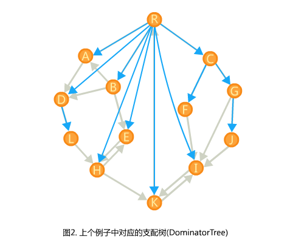

严谨证明见参考链接。
参考链接
定义
现在有一个有向图，我们选定一个根叫。（就是流程图（单源有向图）……）
不考虑不能到所有点的情况。
定义一个点a支配b（a是b的支配点）当且仅当从出发到b的所有路径都经过a。
显然和b是b的支配点。
一个性质: 若a支配c，且b支配c，那么必然有a支配b或b支配a。
如果都不满足，那么b到c的所有路径必须经过a，a到c的路径必须经过b。（不会严谨的说明，但这样的图真找不到。)
这样的话就可以把支配关系搞成一颗树了。对于每个点，有且仅有它的祖先支配它。
(图盗自顶部链接)

求法
在彻底把支配树求出来之前，忽视它。所有的思路和说法都基于DFS树。
我们先对原图跑一边dfs求出dfs树和dfn(点的dfs序）。
dfs树上可能出现三种非树边: 前向边(祖先->后代)、后向边(后代->祖先)、横边(两端无祖先后代关系)。
横边起点的dfn是一定比终点的dfn大的。
引理#1: 对于满足，a到b的路径必然经过a和b的公共祖先(不一定是最近的)。
证明: 考虑把a和b的公共祖先全部删掉。此时a和b在不同的子树中。剩下的前向边和后向边不能超越子树，而a所在子树的dfn均比b所在子树小，不存在横边能从a所在子树到b所在子树。
现在定义x的最近支配点为(immediate dominator)。
再定义一个x的半支配点为(semi-dominator)，用来辅助求出。
注意: 不一定支配x。
半支配点的定义是这样的：
在图中找出所有点y,满足在原图中存在一条y到x的路径(y不计入路径)，使。
(换句话说就是从y出发后，不经过x的祖先到达x，考虑引理#1)
对于所有满足条件的y，我们让dfn最小的那个y成为。
有一个性质是y一定是x的祖先：
显然x的父亲一定满足条件，所以。
因为如果不是的话，根据上一行和引理#1总能找到dfn更小的。
还有两个性质（第二个依赖于第一个）：
- 一定是x的祖先，因为总有一条路径只经过x的祖先链到达x。
- 支配，否则存在一条路径绕过到后跳出的祖先链到达。
一些定义:
- 表示经过某种路径到达。
- 表示只经过树边到达。
- 表示dfs树上a到b的路径（含a不含b）
假设现在知道，那么如何推出?
因为和都在x的祖先链上，所以把那条链抽出来当线段考虑。
在链上区间中找到最小(最前/浅)的y。
因为区间包含x，所以。
下面这步建议自己画图思考(比理解解释还快)，思路都是说明a是b的支配点且没有比a更近的支配点。
- 若，那么
- 这时支配x，因为不存在路径能绕过到达。
- 从半支配点出发保证能绕出x的祖先链到达x，所以中不存在支配x的点。
- 若，那么
- 不存在一种不经过的路径(z为路径越过后第一个在x祖先链上的点)，如果存在：
- 若，那么不支配y
- 若，那么不是最小的那个
- 后面没有支配x的点。
- 对于上的某个点，总有路径绕过它。
- 对于上的某个点，因为，所以总有路径绕过它。
- 不存在一种不经过的路径(z为路径越过后第一个在x祖先链上的点)，如果存在：
现在考虑如何求。
我们按dfs序从大到小考虑，这样在考虑某个点x时所有指向x的点（除了父亲）都已经被考虑过了。
考虑一个指向x的点y能够怎样更新。
如果y是x的祖先：
显然只能用y去更新。经过这条边的路径不可能有更优的方案。
如果y不是x的祖先：
令x和y在dfs树上的lca为z。
因为dfs树的关系，z的两颗子树之间边只能是一个方向的（dfn大的子树指向dfn小的子树），所以x所在子树不会有指向y所在子树的边。
于是可以考虑用上的点更新，因为它们计算出sdom的路径都不会经过x所在子树（也就是保证能接个x且依然合法）。
因为的链顶的sdom的dfn一定小于等于，所以这条链的sdom中dfn最小的点也一定在x的祖先链上，可以先求出来再更新。
所以现在的问题是快速求。
可以用只带路径压缩的并查集维护。
当一个点被计算完毕时，把它指向它在dfs树上的父亲。
这样在计算x时，y可以通过不断的跳父亲(并查集的)跳出这条链出来。
并查集在路径压缩的时候维护一下它,它并查集的父亲这段区间的最小的sdom。
这样从y边跳边取min，一路跳到并查集的根就得到这条链的答案了。
可以先把没有处理的点的sdom设为他自己，这样在并查集上查询y是x祖先的情况时也能查出想要的答案，避免分类讨论。
因为求需要的信息也是一段区间最小的sdom值，所以可以在求出之后可以直接把对x的询问挂在处，等退栈到时算出x的答案，这样就不用分两次算。
code:
namespace G{
int fa[N],dfn[N],idx[N],idom[N],sdom[N];
std::vector <int> g[N],inv_g[N],qbuk[N];
namespace U{
int fa[N],npt[N];
void init(){
for(int i=1; i<=n; ++i) npt[i]=i;
}
int find_rt(const int x){
if(!fa[x]) return x;
int f=find_rt(fa[x]);
if(dfn[sdom[npt[fa[x]]]]<dfn[sdom[npt[x]]]){
npt[x]=npt[fa[x]];
}
return fa[x]=f;
}
int get_npt(const int x){
return find_rt(x),npt[x];
}
}
inline void add(const int a,const int b){
g[a].push_back(b);
inv_g[b].push_back(a);
}
void dfs_dfn(const int x){
static int cnd;
dfn[x]=++cnd;
idx[cnd]=x;
for(std::vector <int> ::iterator it=g[x].begin(); it!=g[x].end(); ++it){
if(dfn[*it]) continue;
fa[*it]=x;
dfs_dfn(*it);
}
}
void get_dom(){
U::init();
dfs_dfn(1);
for(int i=1; i<=n; ++i){
sdom[i]=i;
}
for(int i=n; i>=1; --i){
std::vector <int> ::iterator it;
const int x=idx[i];
for(it=inv_g[x].begin(); it!=inv_g[x].end(); ++it){
int res=U::get_npt(*it);
if(dfn[sdom[x]]>dfn[sdom[res]]) sdom[x]=sdom[res];
}
qbuk[sdom[x]].push_back(x);
for(it=qbuk[x].begin(); it!=qbuk[x].end(); ++it){
idom[*it]=U::get_npt(*it);//not real
}
for(it=g[x].begin(); it!=g[x].end(); ++it){
if(fa[*it]==x) U::fa[*it]=x;
}
}
for(int i=1; i<=n; ++i){
const int x=idx[i];
if(sdom[idom[x]]==sdom[x]) idom[x]=sdom[x];
else idom[x]=idom[idom[x]];
}
}
}